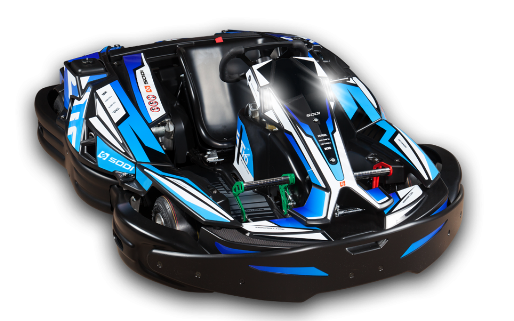

RT10
Diseñada por nuestros equipos de I+D, esta evolución es el resultado de 40 años de experiencia y ofrece nuevas sensaciones. Precisión en las curvas, comodidad de dirección y diversión son las palabras clave de esta innovación que cambiará la experiencia de los pilotos aficionados y experimentados. Con sus nuevos pedales ajustables diseñados para la comodidad de los pilotos, sus protectores de deslizamiento integrales patentados, su sistema único de ajuste del asiento, su dirección de cardán y muchas otras innovaciones, el SODI RT10 también combina diversión y comodidad con seguridad.
RSX2

Equipado con un nuevo motor más silencioso que su predecesor y con baterías de litio de última generación, el Sodi RSX2 tiene mayor potencia y una autonomía de una hora a velocidad estándar. El nuevo motor síncrono procedente del mundo de la automoción dispone de un control de potencia integrado. La ergonomía del RSX2 incluye un sistema de regulación del asiento y de la columna de dirección que permite ajustar fácilmente (además de los pedales regulables) la posición de conducción para adaptarla a la morfología de cada persona. Su nuevo diseño, decididamente moderno, asociado al volante F1, no dejará indiferentes a los pilotos y a los aficionados del karting.
LR5

Sodikart ha desarrollado el nuevo SODI LR5, un kart diseñado exclusivamente para los conductores jóvenes. Un kart sorprendentemente atractivo, su reconocida fiabilidad y su alto nivel de seguridad lo convierten en el kart favorito de los operadores de circuitos que comprenden la importancia y la responsabilidad de supervisar a niños y adolescentes. Con un asiento bucket ajustabla, pedales ajustablas y volante ajustabla en altura, el LR5 puede transformarse para proporcionar la posición de conducción ideal para adaptarse a prácticamente cualquier conductor joven.
Contacto
Ctra. N-430 Km 327,500,
13160 Torralba de Calatrava, Ciudad Real
Horario
Martes - Jueves
10:00 - 20:00
Viernes-Domingo
10:00 - 21:00
646786032